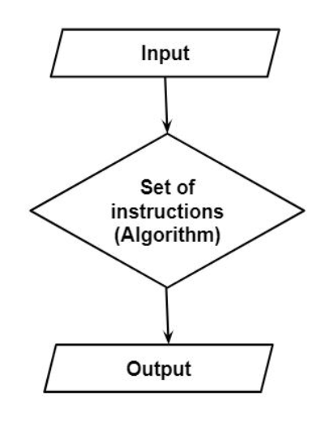

Subtopic 1.1: Computational Thinking
1.1.1 - The definition and Purpose of Computational Thinking
Definition:
A way of thinking that breaks problems into smaller, manageable steps, finds patterns, filters out unnecessary detail, and develops step-by-step solutions (algorithms).
Purpose:
To solve problems efficiently and logically in a way that can be carried out by a computer or human.
1.1.2 - Know when to use Computational Thinking
Good situations to use it:
- Complex tasks that can be split into smaller, more manageable steps.
- Repeatable processes that must produce the same result each time (e.g., manufacturing).
- Tasks suitable for automation.
- Problems requiring accuracy where guesswork is not acceptable.
When not to use it?:
- Simple one-off tasks where overhead of formal steps wastes time.
- Subjective decisions based on taste, intuition, or creativity.
- Brainstorming where open-ended idea generation is more useful than strict structure.
1.1.3 - Know and understand the benefits and drawbacks of using computational thinking
Benefits:
- Improves problem-solving skills.
- Enhances efficiency in task completion.
- Facilitates automation of repetitive tasks.
- Encourages a structured approach to problem-solving.
Drawbacks:
- Can be time-consuming for simple tasks.
- May lead to over-engineering of solutions.
- Requires a certain level of technical knowledge.
- Not always suitable for creative or subjective tasks.
1.1.4 - Know the Components of Computational Thinking
1.1.5 - Know and understand the benefits and drawbacks of using the components of computational thinking.
Decomposition:
The breaking down of a complex problem into smaller, more manageable parts.
Benefits:
- Makes large complex problems easier to understand and solve.
- Allows for parallel completion of tasks.
- Helps identify dependencies between tasks.
- Facilitates testing and debugging of individual components.
Drawbacks:
- Can lead to over-complication if not done carefully.
- May require significant time and effort to break down tasks.
- Risk of losing sight of the overall goal when focusing too much on details.
- Requires a good understanding of the problem to effectively decompose it.
Pattern Recognition:
Identifying similarities and patterns in order to solve a problem faster.
Benefits:
- Helps in predicting outcomes based on past experiences.
- Enables the use of existing solutions to solve new problems.
- Improves efficiency by avoiding redundant work.
- Facilitates generalisation of solutions across similar problems.
Drawbacks:
- May lead to overgeneralisation and incorrect assumptions.
- Can result in bias if patterns are misinterpreted.
- Requires a good amount of data to identify meaningful patterns.
Abstraction:
Filtering out unnecessary details to focus on the essential aspects of a problem.
Benefits:
- Reduces complexity by focusing on key elements.
- Enhances clarity and understanding of the problem.
- Facilitates the development of general solutions applicable to multiple scenarios.
- Improves communication by simplifying explanations.
Drawbacks:
- May lead to loss of important details that are crucial for the solution.
- Can result in oversimplification of complex problems.
- Requires a good understanding of what is essential and what can be ignored.
Algorithmic Design:
Creating a step-by-step solution (algorithm) to solve the problem.
Benefits:
- Provides a clear and structured approach to problem-solving.
- Facilitates automation of tasks.
- Enhances reproducibility of solutions.
- Allows for easy testing and debugging.
Drawbacks:
- Can be time-consuming to develop.
- Requires a good understanding of the problem domain.
- May lead to rigidity if the algorithm is too strict.
- Not always suitable for problems requiring creative solutions.
1.1.6 - Know and understand the purpose of Decomposition
1.1.7 - Know the tasks of Decomposition
Purpose of Decomposition:
To break down complex problems into smaller, more manageable parts, making it easier to understand and solve them.
Tasks of Decomposition:
- Identify the main features a problem:
- What is the problem?
- E.g - Designing a school website -> Main features might be: Homepage, Login, Student Dashboard, Teacher Dashboard.
- Characterise each identified feature:
- What does it do?
- What are the Requirements?
- What are the Constraints?
- E.g - The Login feature needs a Username & Password Input, Error Handling, and Security Checks.
- Break the problems down into smaller, more manageable parts:
- What are the sub-tasks?
- What are the dependencies?
- E.g - The Login feature can be broken down into: Input Validation, Authentication, Error Handling, and User Feedback.
- Break solutions down into smaller, more manageable parts:
- Can the solution be split into independent modules or functions?
- Which parts can be reused elsewhere?
- E.gWrite a function for password validation, another for encryption, another for connecting to the database.
1.1.8 - Be able to use decomposition for Problem Solving
Example of Decomposition in Problem Solving:
Problem:
Design a school website.
Decomposition:
- Identify main features:
- Homepage
- Login
- Student Dashboard
- Teacher Dashboard
- Characterise each feature:
- Homepage: Displays school information, news, and events.
- Login: Requires username and password input, handles errors, and checks security.
- Student Dashboard: Displays student grades, assignments, and schedules.
- Teacher Dashboard: Allows teachers to manage classes, assignments, and grades.
- Break down features into sub-tasks:
- Login: Input validation, authentication, error handling, user feedback.
- Dashboard: Data retrieval from database, display information, update records.
- Develop solutions for each sub-task:
- >Create functions for input validation, authentication, data retrieval.
- Implement error handling and user feedback mechanisms.
1.1.9 - Know and understand methods to represent decomposition
Methods to Represent Decomposition:
Block Diagrams
A diagram that shows the main components of a system and how they interact with each other.
Information Flow Diagrams
A diagram illustrating the flow of information within a system, including inputs, processes, and outputs.
Flowcharts
A step-by-step diagram that represents a process or algorithm, showing the steps and decisions involved.
Code
Using programming code to represent the decomposition of a problem into functions or modules.
Written Description
A textual explanation of the decomposition process, describing the main features, sub-tasks, and solutions.
1.1.10 - Be able to use the methods to represent decomposition.
You must practice on using these methods!
1.1.11 - Know and understand the purpose of Pattern Recognition
Pattern Recognition:
Identifying similarities and patterns in order to solve a problem faster.
Purpose:
- Simplify Complex Problems:
By recognising patters, we can break a big problem into smaller, manageable chunks.
- Reuse Existing Solutions:
Identifying patterns allows us to apply solutions from previous problems to new ones, saving time and effort.
- Improve Efficiency:
Recognising patterns can lead to faster problem-solving by avoiding unnecessary steps and focusing on what works.
- Predict Outcomes:
Patterns can help us make educated guesses about what might happen next, allowing for proactive solutions.
1.1.12 - Be able to use pattern recognition for problem solving
Pattern recognition is not just theoretical - it’s a practical tool for solving problems. Here’s how it can be applied:
1. Find and interpret trends and similarities
- Look for repeated patterns within the problem itself or across different problems.
- Example: In a series of exam results, noticing that students perform worse on questions involving diagrams can highlight a trend to address.
2. Find and interpret common features with existing solutions
- Compare the problem to ones you have solved before.
- Example: Designing a login system may share features with previously built authentication systems (username/password verification, error handling).
- This allows you to reuse solutions or adapt them instead of starting from scratch.
3. Make predictions and assumptions
- Use identified patterns to predict what might happen next or what solution is likely to work.
- Example: If sales have increased every December for the past five years, you might predict an increase this December and prepare resources accordingly.
1.1.13 - Know and understand the Purpose of Abstraction
Abstraction:
Filtering out unnecessary details to focus on the essential aspects of a problem.
Purpose:
- Simplify Complexity: By removing non-essential details, we can focus on the core problem, making it easier to understand and solve.
- Enhance Clarity: Abstraction helps in presenting information in a clear and concise manner, improving communication.
- Facilitate Generalisation: By focusing on essential features, we can develop solutions that apply to a broader range of problems.
- Improve Efficiency: Abstraction allows us to concentrate on what matters most, leading to faster problem-solving.
1.1.14 - Know and understand the tasks of Abstraction
Tasks of Abstraction:
-
Identify Information That Is Needed
- Determine which data, inputs, or components are essential to solving the problem.
- Example: In a login system, the essential information might be the username and password.
-
Filter Out Unnecessary Details
- Ignore anything that is not relevant to the solution.
- Example: You don’t need to show the code for password hashing when explaining the login process to a user.
-
Hide Details of Internal Workings
- Focus on what the system works, not how it works it internally.
- Example: A calculator’s user only cares about entering numbers and getting results, not the algorithms behind calculations.
1.1.15 - Be able to use abstraction
1.1.16 - Be able to use abstraction in problem solving.
Abstraction can be applied practically to plan and design solutions by asking several key questions:
-
What Inputs Are Needed
- Identify exactly what information or data the solution requires.
- Example: A registration form needs name, email, and password.
-
What Are the Expected Outputs and Outcomes
- Determine what the solution should produce or achieve.
- Example: After registration, the system should display a confirmation message.
-
Things That Will Vary
- Identify parts of the system or process that may change.
- Example: Usernames and passwords will vary between users.
-
Things That Will Remain Constant
- Identify parts that stay the same.
- Example: The format of the confirmation message.
-
Key Actions the Solution Must Perform
- List the essential steps or functions.
- Example: Validate input, save data, and display confirmation.
-
Repeated Processes the Solution Will Perform
- Identify tasks that occur multiple times.
- Example: Every login attempt requires validation and authentication.